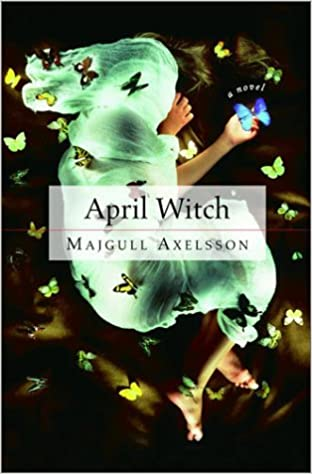

Majgull Axelsson is an author, lecturer and journalist from Landskrona, Sweden. Her books have been translated into over twenty languages. Amongst the awards she's received for her work is Augustpriset (1997), BMF-Plaketten (1997, 2014) and the Ivar Lo award (2015).
Welcome to Majgull Axelssons official website!

This website is the official homepage for Majgull Axelsson, a Swedish author who has been translated into over 20 languages. Through her career she has moved from producing
documentary-books about child labour and destitute, homeless children to novels such as 'April Witch' that take a searching look at Swedish society throughout the 20th and 21st century.
Majgull does not use any social media (Though the webmaster of this site maintains her presence on Goodreads).
Instead, this site is the best way both to contact Majgull with inquiries and to keep abreast on any upcoming appearances.
For more information on specific books by Majgull, please check the books page, which contains review quotes, cover-text and ISBN numbers for all her fiction-books.
If you want to contact Majgull, please visit the contact page and fill out the form, your message will be forwarded to Majgull.
If you'd like more information about Majgull, her publisher or the site itself please visit the about page.
If you'd like information on upcoming appearances, they are listed on this page. All upcoming events are listed here, with links to the google calendar entry.
Upcoming events:
(Please note, event-descriptions are usually listed in Swedish.)